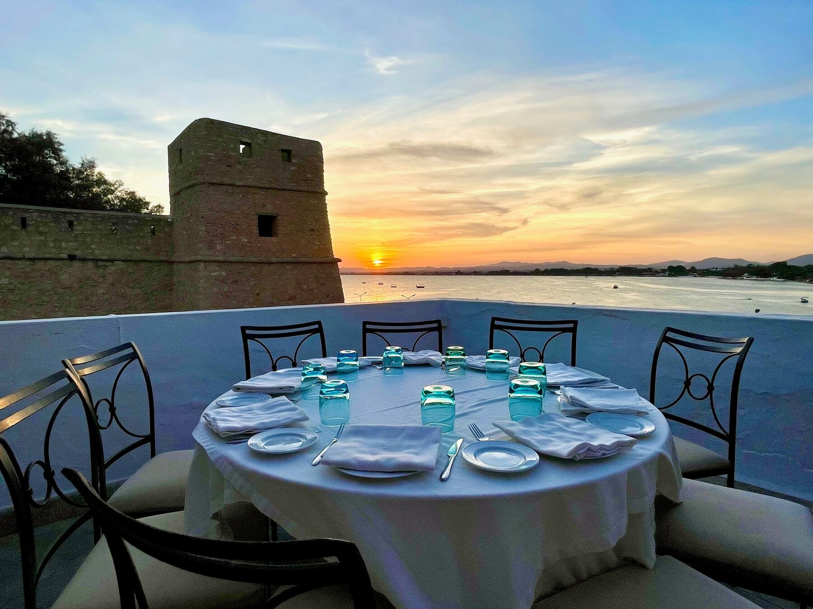
Restaurant · Wine Bar — La Médina, Hammamet
Le Barberousse
Posé sur les remparts de la vieille médina de Hammamet, tout en haut du Fort, face au golfe.
- Restaurant
- Tous les jours, 12h – 00h · service continu
- Wine Bar
- Tous les soirs, 17h – minuit
- Où
- En haut du Fort, La Médina
Restaurant & wine bar on the ramparts of Hammamet’s old medina — at the very top of the Fort. Open daily, noon to midnight.
Le lieu
Un restaurant historique dans une ville historique
Les remparts de pierre ocre du Fort, une terrasse ouverte sur la mer et une salle aux grandes baies vitrées : au Barberousse, chaque table regarde le golfe de Hammamet.
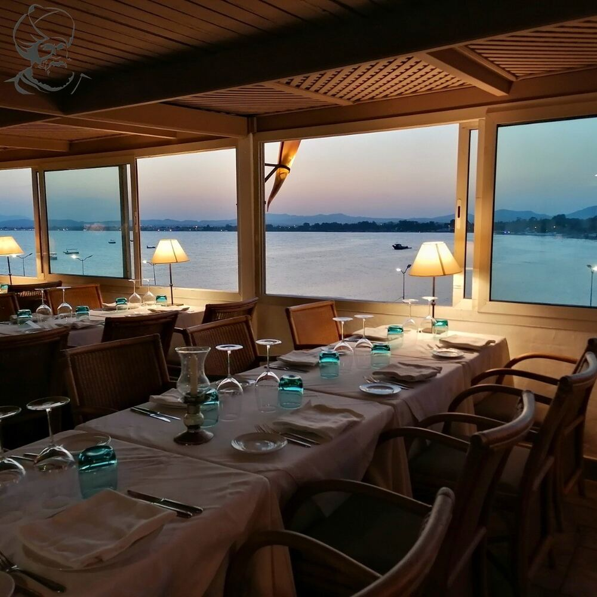
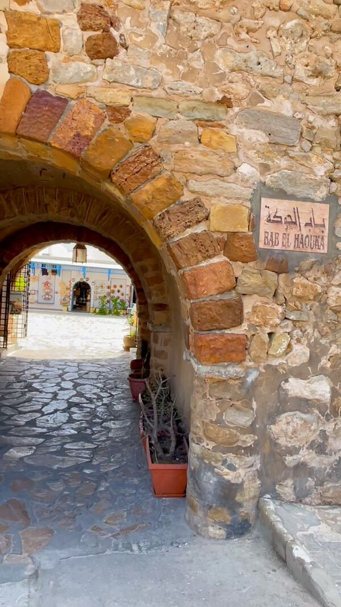
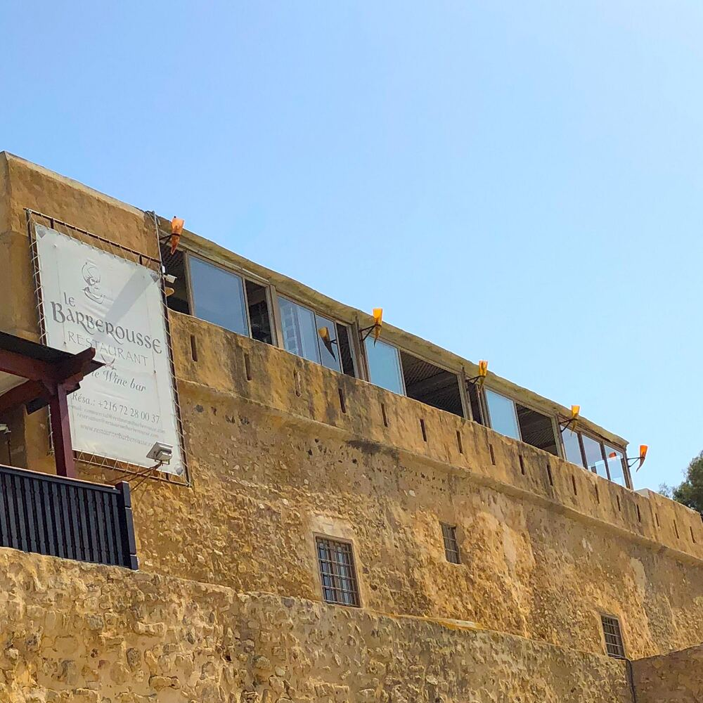
Comment nous trouver
Montez tout en haut du Fort
- La Médina de HammametEntrez dans la vieille ville, au bord de la mer.
- Le FortRejoignez les remparts et montez.
- Tout en haut : Le BarberousseNotre enseigne est sur le mur du Fort, la vue sur le golfe vous attend.
Le Barberousse se trouve tout en haut du Fort. Si l’on vous propose une autre table en chemin, ce n’est pas nous : venez directement jusqu’à nous.
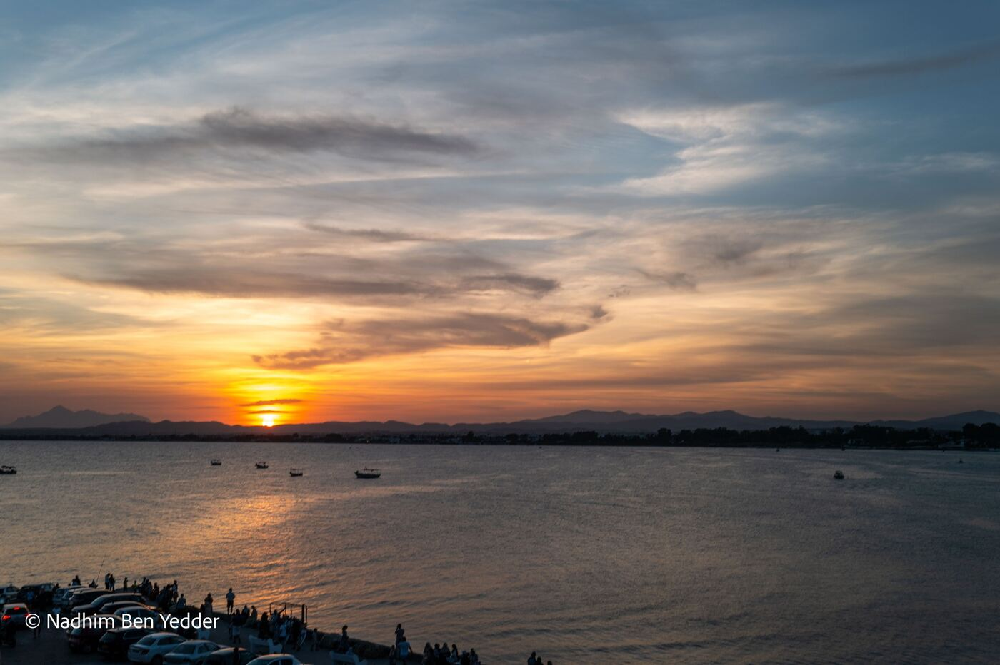
« Une vue imprenable sur le golfe de Hammamet. »
Depuis le restaurant
La cuisine
Cuisine raffinée, choix divers et varié, produits frais.
Une expérience gastronomique marquante et unique dans le cœur historique de Hammamet.
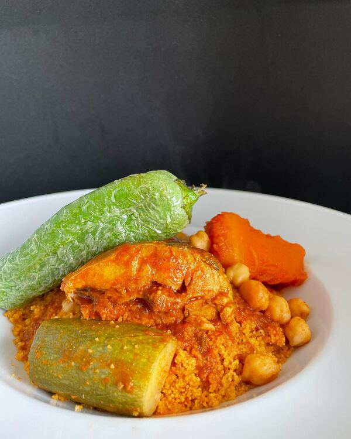
Couscous au poisson 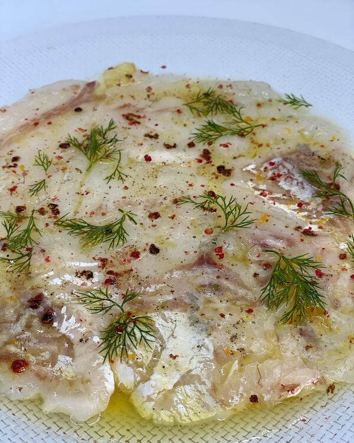
Carpaccio de loup 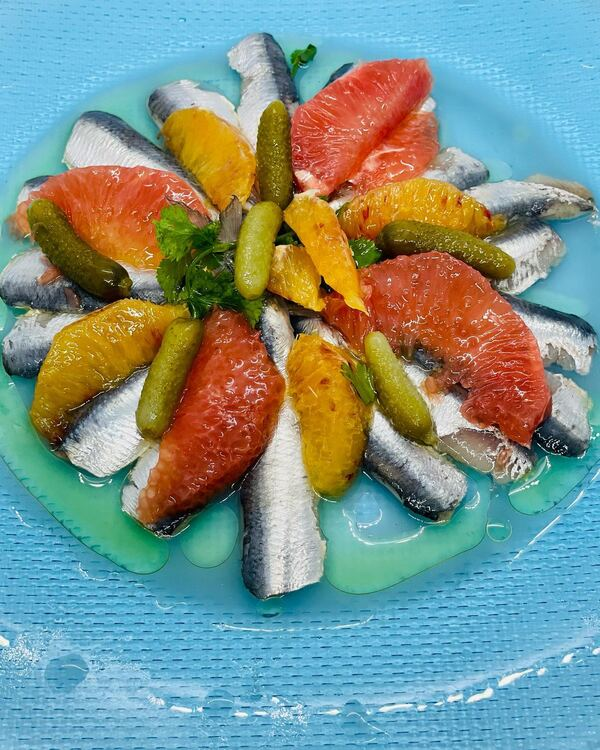
Filets de sardines 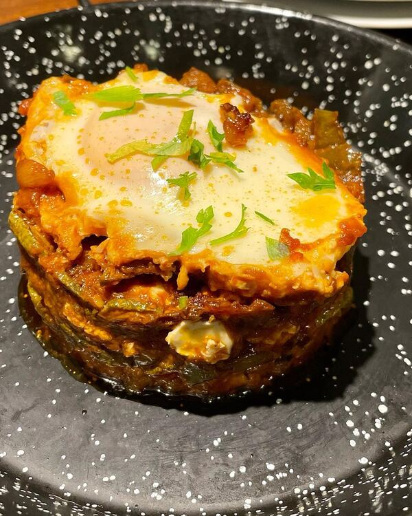
Charmoula 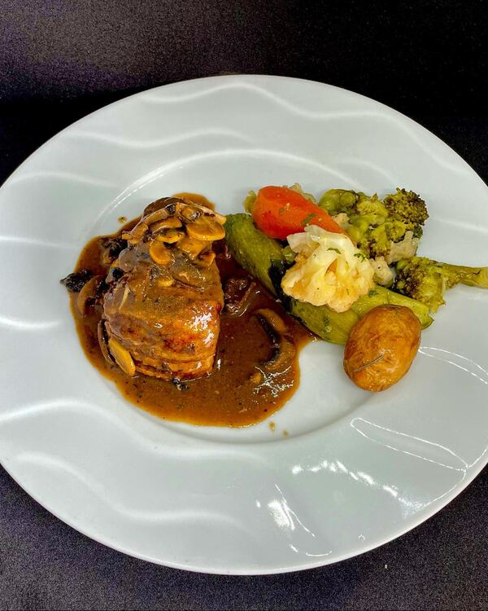
Filet de bœuf à la sauce champignons 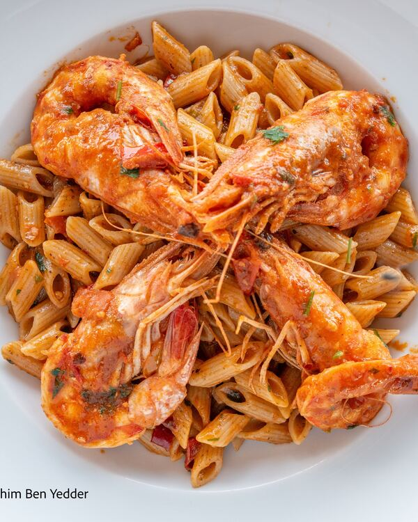
Crevettes & pâtes 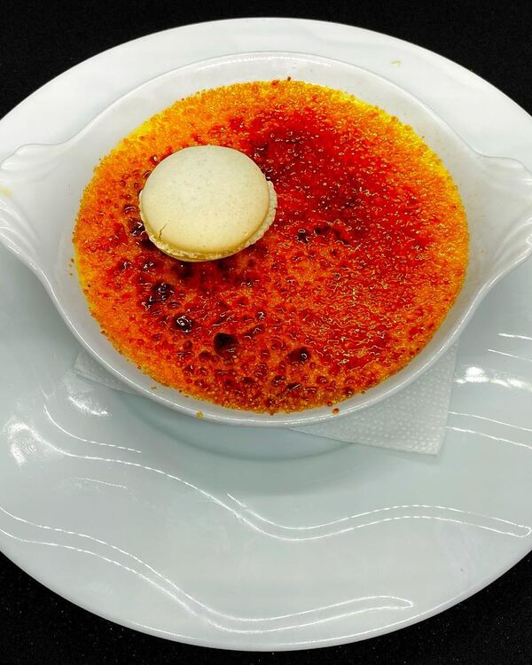
Crème brûlée 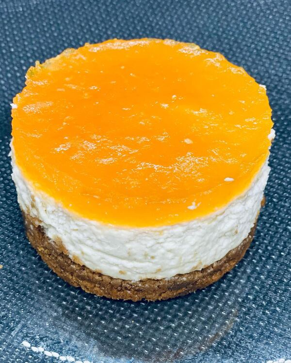
Cheesecake orange 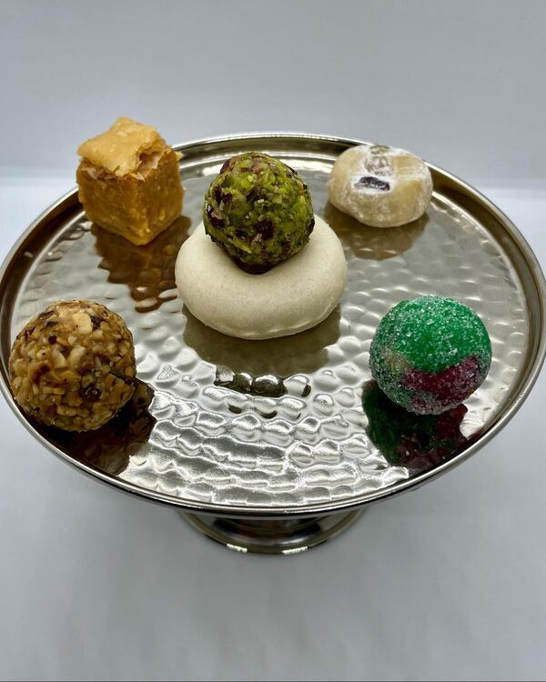
Pâtisserie tunisienne traditionnelle
Quelques assiettes de la maison, telles que partagées sur notre Instagram. Une question sur la carte ? Appelez-nous au 72 280 037.
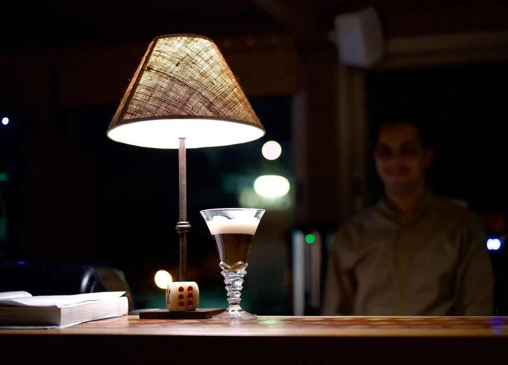
Le Wine Bar
La cave Shadrapa
Venez découvrir la cave Shadrapa au Wine Bar.
Partenariat exclusif avec Shadrapa, vins tunisiens, à déguster au-dessus des remparts quand la médina s’allume.
Soirées
Le Ney, au fil du dîner
Le Ney, flûte typiquement berbère, enchantera votre dîner.
Pour les dîners d’exception, la musique s’invite à table.
Les prochaines dates sont annoncées sur Instagram. Réservation au 72 280 037.
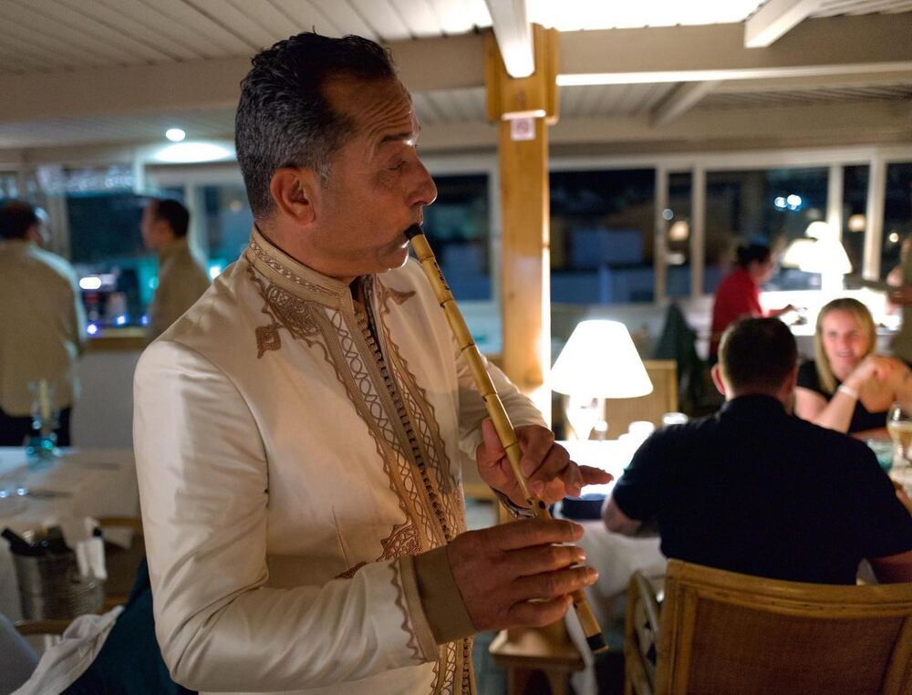
Infos & réservation
Nous rendre visite
Adresse
Restaurant Le BarberousseLa Médina, Hammamet 8050, Tunisie
Tout en haut du Fort.
Horaires
| Restaurant | Tous les jours 12h – 00h, service continu |
|---|---|
| Wine Bar | Tous les soirs 17h – minuit |
Membre de la Fédération Tunisienne des Restaurants Touristiques.